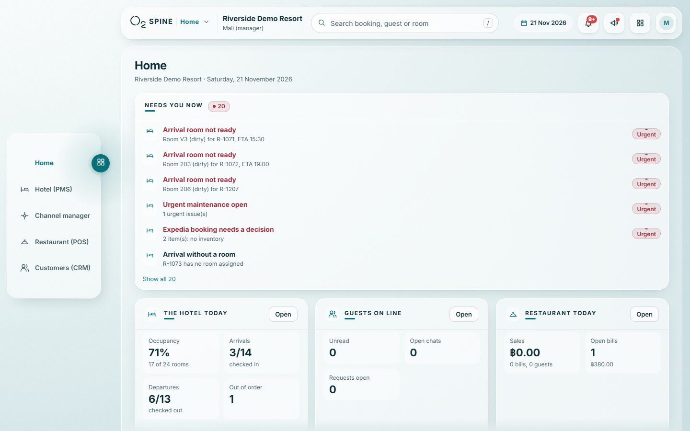
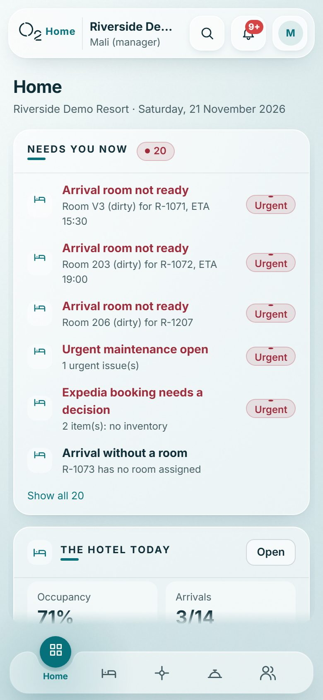
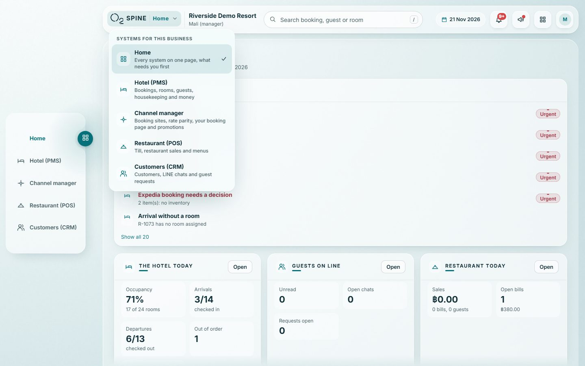
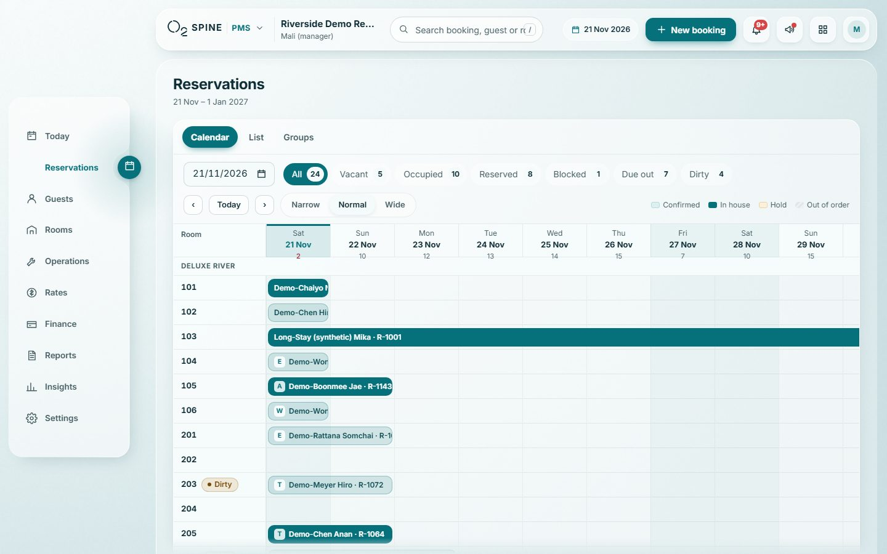
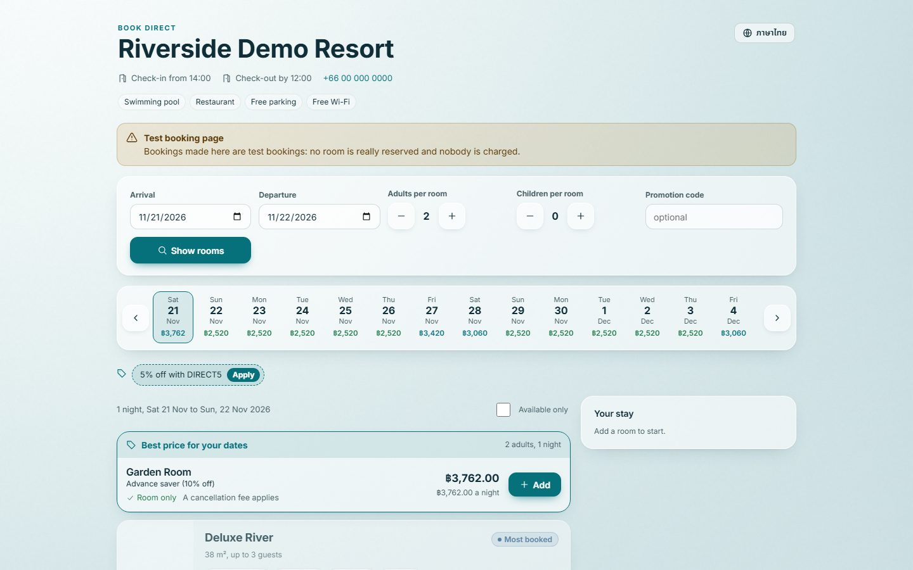
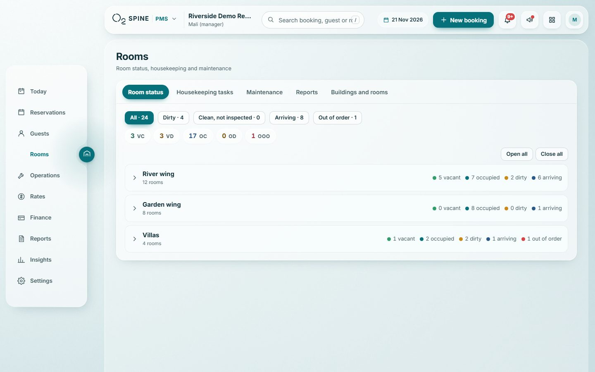
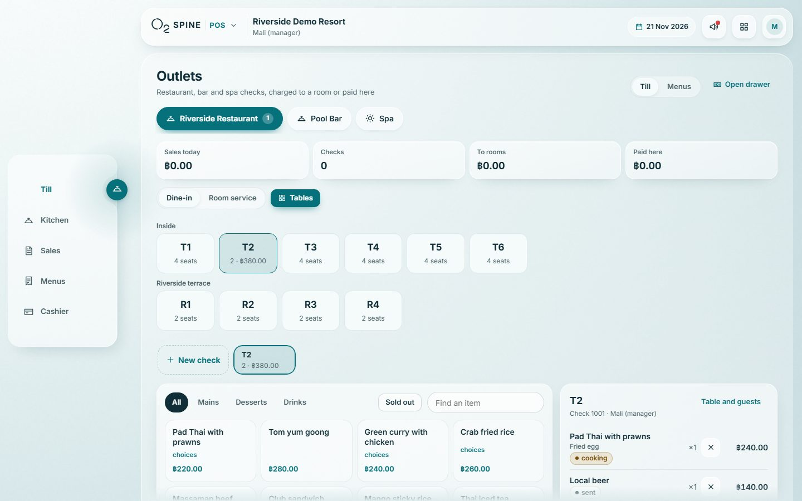
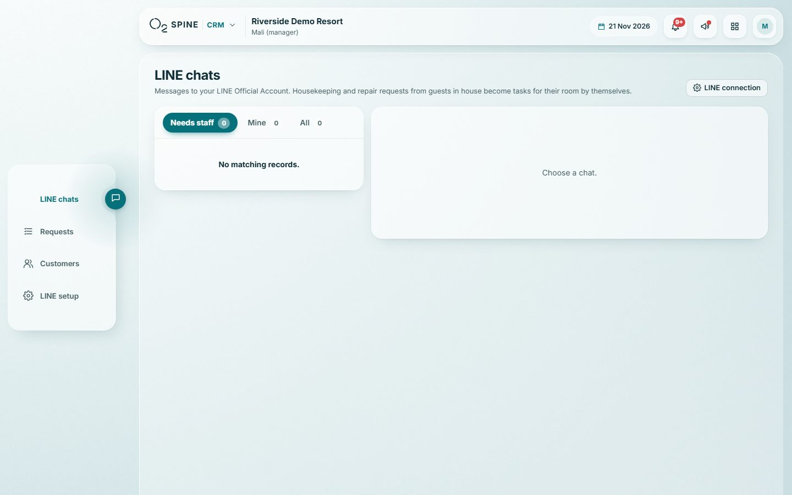

One app that runs a whole business. Every O2 product lives inside it, shares one record of guests, rooms, prices and money, and works as one system. An owner with several businesses sees them all from one sign-in.
Every screen here shows the Riverside Demo Resort: a made-up hotel with made-up guests.Each business switches on the systems it uses. The O2 mark at the top left opens them; Home comes first.
What needs someone now, from every system and urgent first, then one card per system: the hotel today, guests on LINE, restaurant sales, new bookings.
Bookings and the room chart, check-in and check-out, rooms by building, housekeeping, repairs, guest bills, payments, cash drawers, the night audit, rates, reports.
Booking sites and price parity, packages and promotion codes, and the hotel's own booking page with a price calendar and three ways to pay.
A till for the restaurant, bar or spa: tables, menus with choices, a kitchen screen, discounts, split and merge, bills charged to the guest's room.
LINE chats with the hotel's Official Account, guest requests sorted in Thai and English, and one profile per customer.
Appointments, treatments and the visit log for clinics; and each client's website, editing its content and taking bookings from SPINE.
The systems are views on one shared record per company, so a change in one is seen at once in the others.
Taken from the running app on 22 November 2026, in the Glass light look. SPINE also has Glass dark, Light and Dark, in English and Thai.







